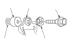
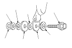
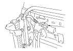
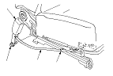
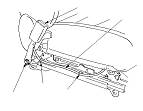
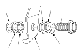

Front Seat Belt Replacement
|
SRS components are located in this area.
Review the SRS component locations LHD
,
SRS Component locations RHD,
and the
precautions and procedures
before performing repairs or service.
NOTE: Check the front seat belts for damage, and replace them if necessary. Be careful not to damage them during removal and installation.
Front Seat Belt
|
|
|
|
Upper anchor bolt construction

Lower anchor bolt construction

|
|
Seat Belt Buckle
NOTE: LHD is shown; RHD is symmetrical.
|
Manual height adjustable seat

8-way power seat

|
|
Manual height adjustable seat

8-way power seat

|
|
Center anchor bolt construction

|